混合架构：在Supabase和Spring Boot中兼得两全
发布于 14 January 2026
现代建筑的伪两难
在构建具有静态前端的现代应用程序时，我们常常会面临一个二元选择：
-
把所有赌注押在一个 Backend-as-a-Service 解决方案上(Supabase, Firebase) - 简单但有限
-
构建一个完整的后端(Spring Boot, Node.js) - 强大但复杂
这个选择是一个假两难。混合架构提出了一条第三条道路：在每项技术发挥其优势的地方使用它。
建筑愿景
传统架构：单体
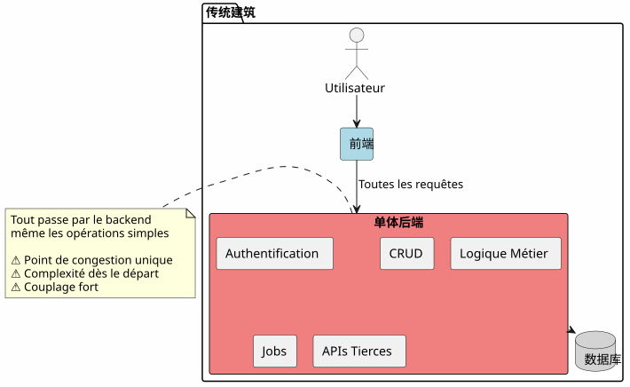
在这种方法中，即使是最简单的操作（阅读一篇文章，创建一个评论）也必须通过您的后端。您从第一天起就要为复杂性付出代价。
BaaS 架构：每个代表
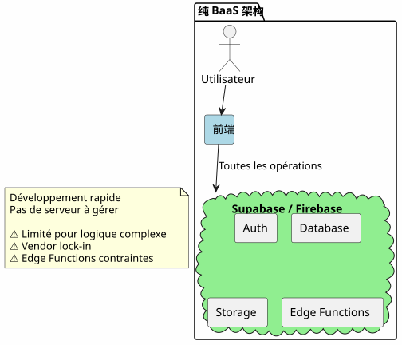
相反，一开始将所有内容委托给 BaaS 很有吸引力，但随着业务逻辑的复杂化，其局限性就会很快显现。
混合架构：责任分离
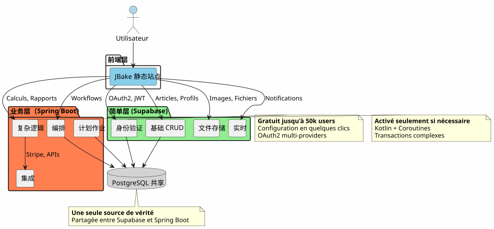
混合架构根据操作的复杂性和性质明确划分职责。
设计原则
原则1：从简单开始，智慧演进
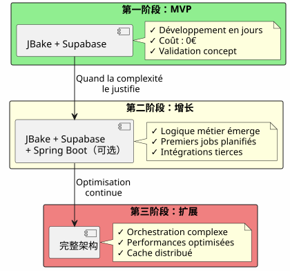
如果你不需要，请不要构建 Spring Boot。以 Supabase 开始，当复杂度需要时添加 Spring Boot。
原则2：按业务性质分离

原则 3：唯一真相来源
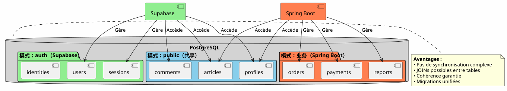
通过共享同一个 PostgreSQL 实例，Supabase 和 Spring Boot 在同一套数据上工作，无需复杂的同步。
流程编排
流程 1：集中身份验证
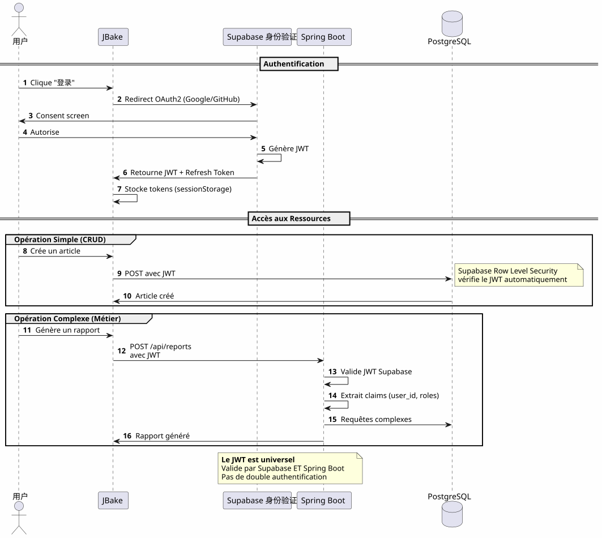
关键点: 单一认证流程，单一 JWT，可在任何地方使用。
Flux 2 : 业务复杂流程的编排
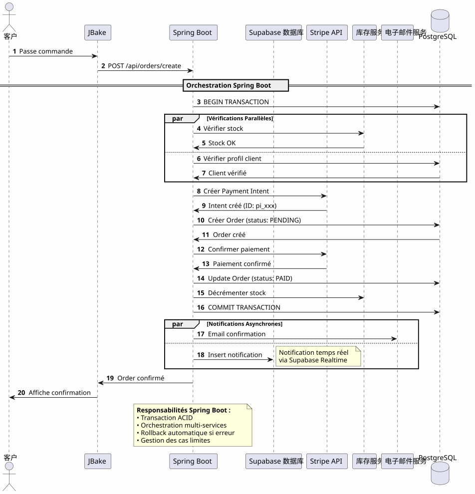
Spring Boot 所带来的可靠地编排涉及多个系统的复杂流程，并提供事务保证。
流程 3：计划作业和同步
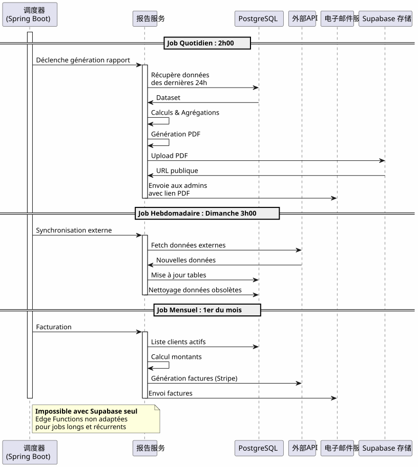
Spring Boot 带来的: 可靠的计划作业，具备状态管理、自动重试和保证执行。
决策矩阵
何时使用 Supabase ?

何时使用 Spring Boot？

按项目类型划分的架构示例
博客 / 作品集
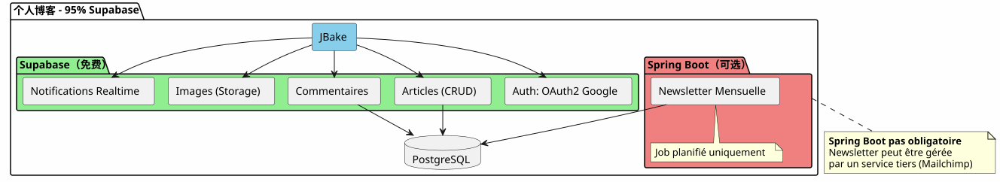
判决: 100% Supabase 足够用了。
SaaS 应用
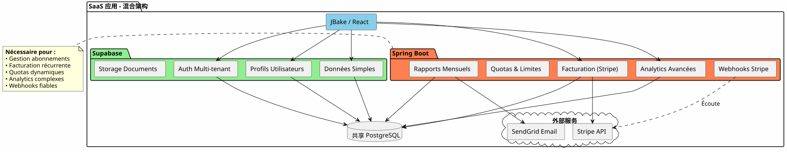
裁决: 必要的混合架构。Supabase 用于主要部分，Spring Boot 用于关键部分（付款、账单）。
电子商务
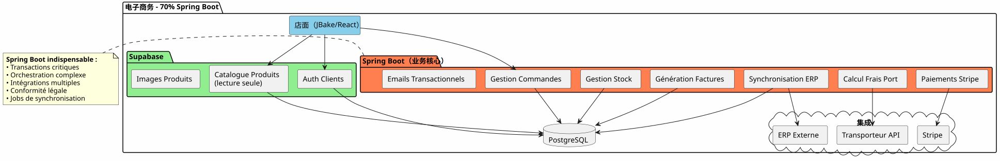
裁决: Spring Boot 不可或缺。 仅用于 Supabase 的身份验证和目录。
渐进式迁移策略
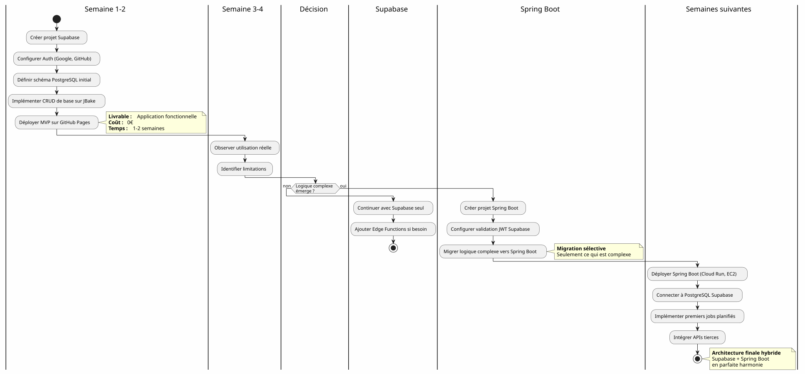
成本与运营考虑
成本结构
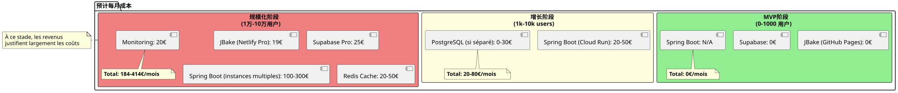
运营职责
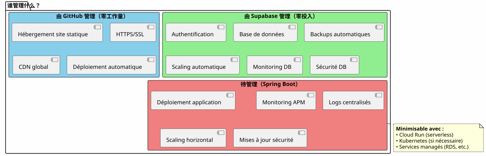
结论：完美平衡
Supabase + Spring Boot 的混合架构不是一个妥协，而是一个协同.
需要牢记的原则

何时选择此架构？
✅ 这种架构在以下情况下是理想的 :
-
您希望快速启动（MVP 以天计，而不是以月计）
-
您预计业务复杂度将增长
-
您想最小化初始成本
-
您喜欢PostgreSQL，并希望拥有一个唯一的真相来源
-
您喜欢 Kotlin 和协程，用于业务代码
-
您想避免完全的供应商锁定
❌ 此架构不适用的情况：
-
您的项目很简单，并且会一直保持简单（个人博客 → 100% Supabase 足以）。
-
您已经有一套您熟悉的后端技术栈
-
您更喜欢传统的单体架构
-
您需要 .NET、Python 或其他后端语言
最终整体视野
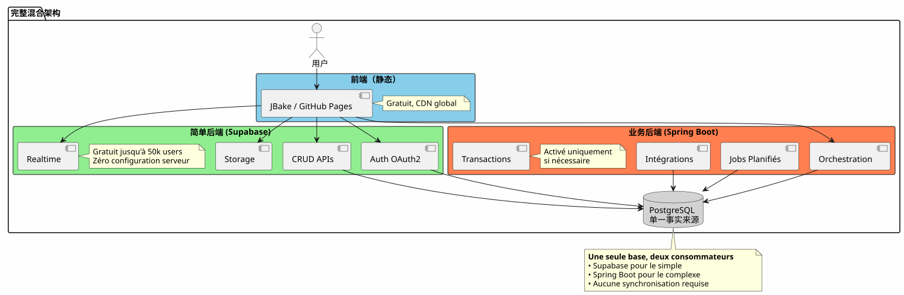
两全其美
此架构为您提供：
🚀 Supabase 的速度
-
以小时为单位启动，而不是以周为单位
-
OAuth2 认证只需几次点击
-
自动生成的REST API
-
零服务器配置
💪Spring Boot的力量
-
Kotlin和协程用于优雅的异步代码
-
复杂业务流程的编排
-
可靠的计划任务
-
ACID 事务有保障
-
完整的Spring生态系统
💰 进步经济
-
0€ 开始并验证
-
随增长而变化的成本
-
无需提前过度设计
🎯 建筑灵活性
-
渐进式迁移，无需重构
-
仅在必要时添加 Spring Boot
-
没有完全的供应商锁定
-
可演进架构
更进一步
技术资源
Supabase 文档 :
Spring Boot 文档：
补充条款：
-
使用 JWT 保护 API 安全
-
PostgreSQL性能优化
-
渐进式迁移模式
-
分布式架构中的错误处理
实际使用案例
这种混合架构在以下场景中被成功使用：
-
SaaS B2B: Supabase身份验证，Spring Boot 计费
-
市场: Supabase 目录, Spring Boot 事务
-
内容平台: Supabase 文章, 分析 Spring Boot
-
内部工具: CRUD Supabase, Spring Boot 工作流程
启动检查清单
第一阶段 - 基础（第1周）
-
创建 Supabase 账户 - [ ] 配置 PostgreSQL 项目 - [ ] 启用 Auth (Google, GitHub) - [ ] 定义初始方案 - [ ] 配置 Row Level Security - [ ] 测试来自 JBake 的 API
阶段 2 - MVP (第2-3周)
-
实现主要页面 - [ ] 集成 OAuth2 认证 - [ ] 创建 CRUD 表单 - [ ] 配置 Storage 用于文件 - [ ] 部署到 GitHub Pages - [ ] 在真实条件下测试
阶段3 - 演变（根据需求）
-
识别复杂逻辑需求 - [ ] 如有必要创建 Spring Boot 项目 - [ ] 配置 Supabase JWT 验证 - [ ] 连接到 Supabase PostgreSQL - [ ] 迁移复杂功能 - [ ] 实现计划任务 - [ ] 部署 Spring Boot（Cloud Run 等）
应避免的反模式
❌ 不要做：
-
在 Supabase 和 Spring Boot 之间复制数据
-
创建两个独立的 PostgreSQL 数据库
-
自己编写身份验证
-
使用 Spring Boot 进行简单的 CRUD
-
从一开始就过度设计
-
忽略 Supabase 的行级安全性
✅ 更好做:
-
共享单个PostgreSQL数据库
-
让 Supabase 处理身份验证
-
仅使用 Spring Boot 来处理复杂性
-
从简单开始，逐步发展
-
利用每种技术的优势
-
使用 RLS 在数据库级别进行安全防护
发展前景
添加新功能
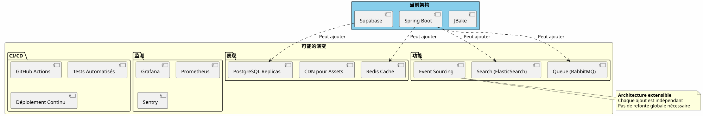
水平缩放
当您的应用程序增长时，混合架构自然地扩展：
Supabase :
-
自动扩展至数百万次操作
-
读取副本 用于读取性能
-
用于安全的时间点恢复
Spring Boot：
-
负载均衡器后的多个实例
-
无状态设计有助于水平扩展
-
Kubernetes 用于必要时的编排
PostgreSQL：
-
大型表的分区
-
连接池 (PgBouncer)
-
分片真的很有必要（罕见）
建筑见证
SaaS 初创公司（50k 用户）
_ 我们最初完全使用 Supabase。当用户达到 5k 时，我们仅为 Stripe 计费和月度报告添加了 Spring Boot。一年后，我们 80% 的操作仍然通过 Supabase 进行。Spring Boot 仅处理关键部分。这种分离使我们能够在不进行重构的情况下进行扩展。 _
E-learning平台 (10k 用户)
__ Supabase 的 OAuth2 认证为我们节省了三周的开发时间。自动生成的 API 管理我们的全部课程目录。Spring Boot 仅用于 PDF 证书和进度邮件。架构简洁、可维护且可扩展。 (No source text provided, so no translation to output.)
B2B 市场（3千用户）
__ Spring Boot 处理买卖双方之间的事务（关键）。Supabase 处理其余所有内容：个人资料、实时消息、文档。他们共享同一 PostgreSQL 数据库这一事实使我们无需进行复杂的同步。这是我们迄今为止做出的最佳架构选择。 (Empty output)
综合：一种现代建筑范式
Supabase + Spring Boot 的混合架构代表着一种新范式：建筑专业化。
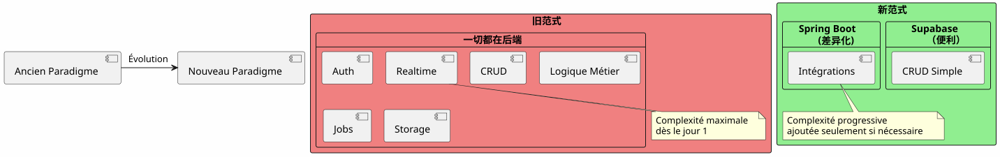
基本原则：不要构建已经以服务形式存在的东西。专注于使您的应用与众不同的地方。
80/20法则
在大多数应用程序中：
-
80%的操作是标准的 CRUD → Supabase
-
20%的操作需要业务逻辑 → Spring Boot
这种自然规律证明了混合架构。
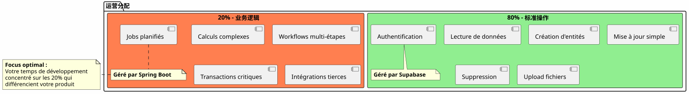
最终结论
混合架构不是一种技术上的妥协，它是一种战略决策.
它允许您：
-
✅ 快速启动一个功能完整的MVP
-
✅ 验证您的市场，无需大量投资
-
✅ 在复杂度需要时逐步演进
-
✅ 掌控每一步的成本
-
✅ 充分利用每种技术的优势
-
✅ 避免过早的过度工程
-
✅ 保持未来的灵活性
它代表：
-
🎯实用主义: 她擅长的每项技术
-
🚀速度: 最短的上市时间
-
💰经济成本与价值保持一致
-
🔮可扩展性: 随你成长的架构
-
🛡️鲁棒性: 经验证实且可靠的服务
您的下一步
如果这种架构让你有共鸣，这里是开始的地方：
-
创建一个 Supabase 账户(免费)
-
定义您的最小数据模式
-
配置 OAuth2 身份验证
-
创建您的第一个使用 API 的 JBake 页面
-
在GitHub Pages上部署
您将拥有一个可运行的 MVP 在几天。
Spring Boot 将在您需要时自然到来。在此之前不会。
混合架构就是在需要的时候恰好建造所需之物的艺术。
祝开发顺利！ 🚀
如果您认为这篇文章可以帮助其他开发者做出正确的架构选择，请分享它。
相关文章
31 May 2026
14 May 2026
12 May 2026